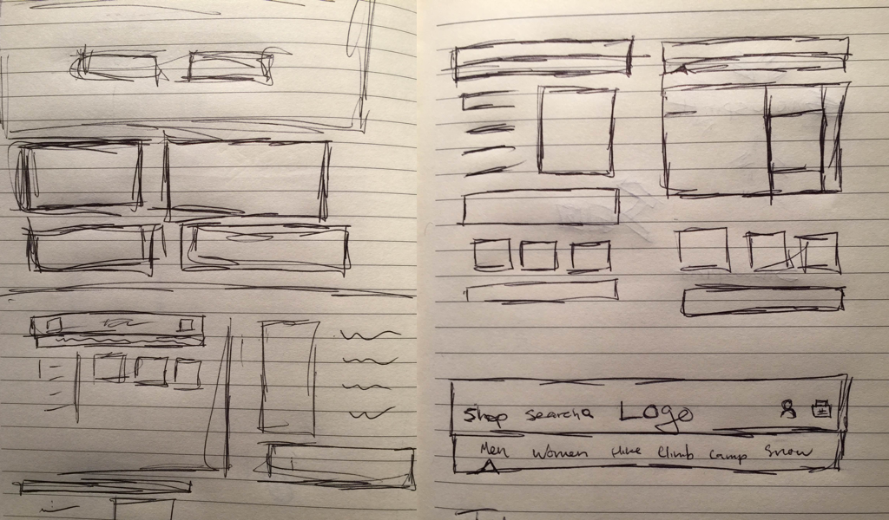
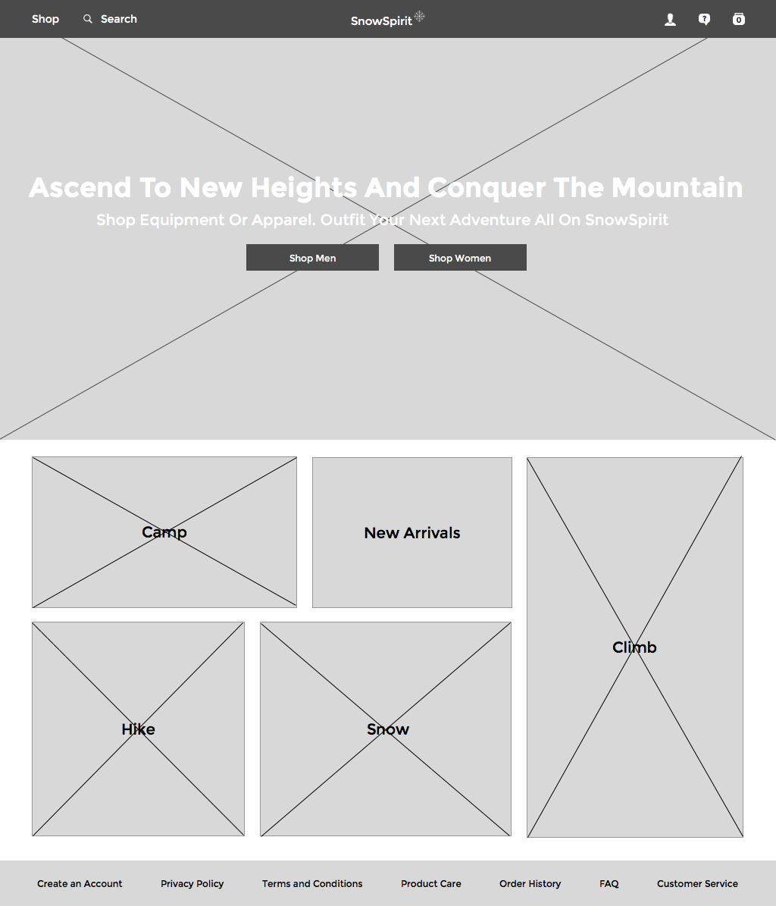
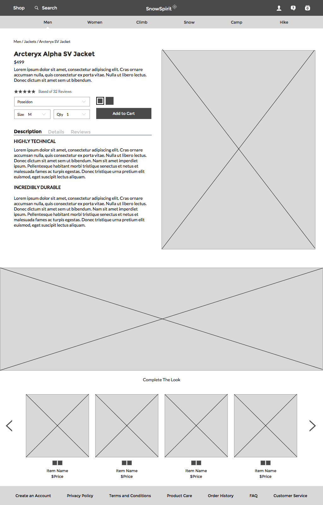
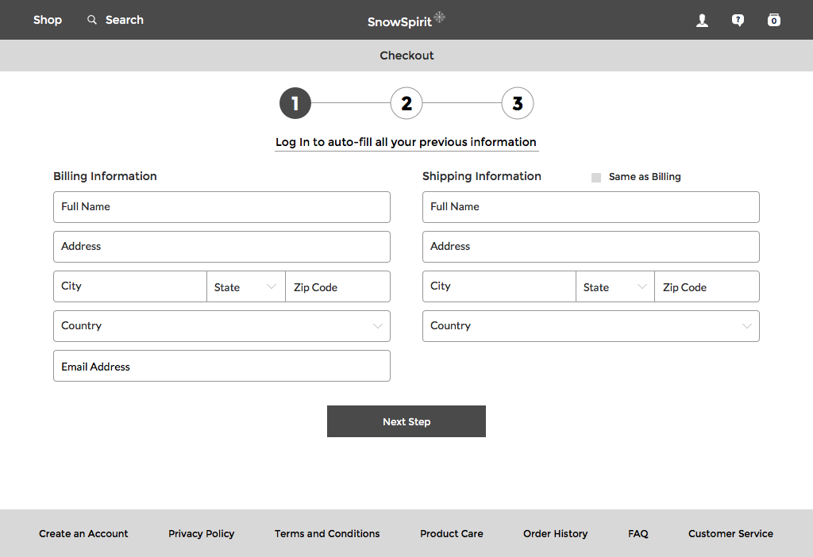
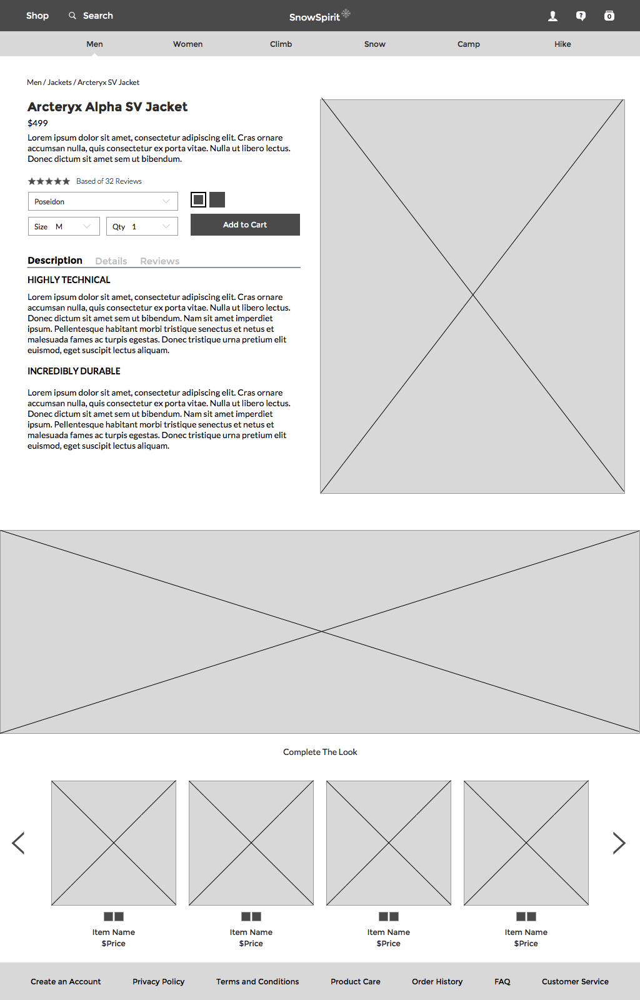
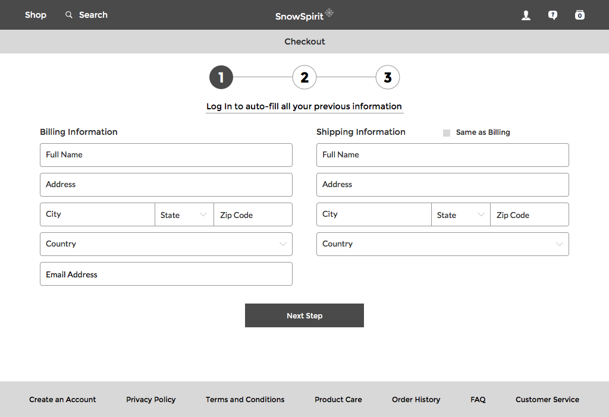
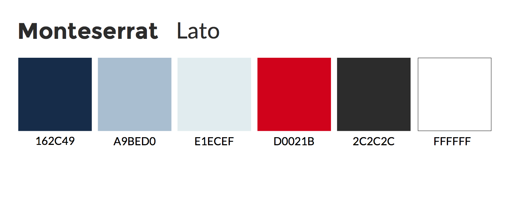

Every design for me starts with my sketchbook. Everything from layouts, sitemaps, and even early wireframes start in my sketchbook.
I like to create a sitemap as soon as I have the idea rolling. It helps me do two things:
Method of choice for me is to use Sketch for all my wireframes both high and low fidelity. I can easily align the wireframes to what I want and then fill in the images and colors straight into the layouts.
 



I used Monteserrat for the titles and Lato for the subtext. Monteserrat is a strong, bold font that promotes the feeling of strength. I wanted the hero to almost be a challenge to the user; inspiring them to climb mountains. Lato is a more easily read text but still in the sans-serif family. The pairing of the two fonts helps with the outdoor/ industrial feel. No glit or glam.
The monochromatic colors of the page tie into the feel of winter. The dark blue anchors the page, and the further softer blues don't distract the user from the product.
My method of creating the final product is using a combination of Illustrator and Photoshop to build the content then push them into Sketch which I can easily manipulate. I then would upload the screens onto Invision where I could build the prototype and work out any design flaws or problems.


Hope you enjoyed a peek into my process.